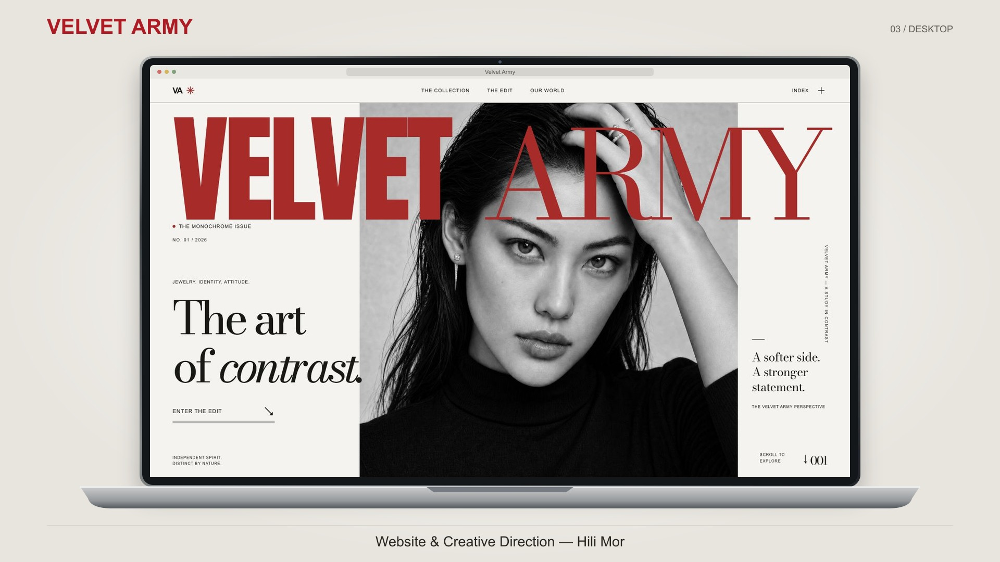
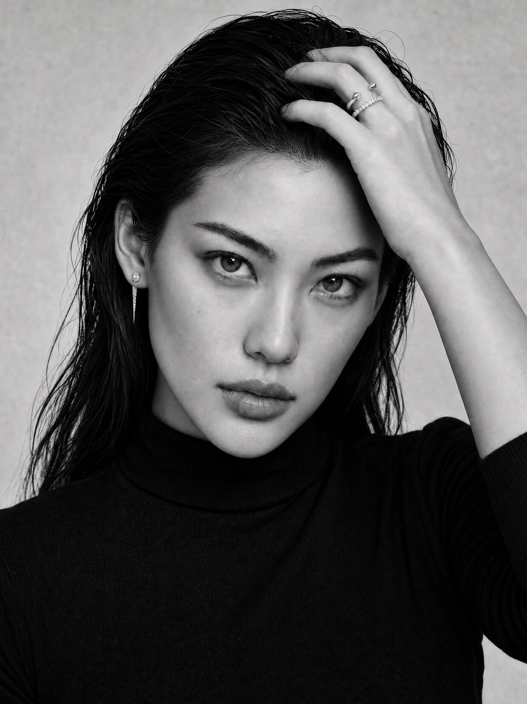
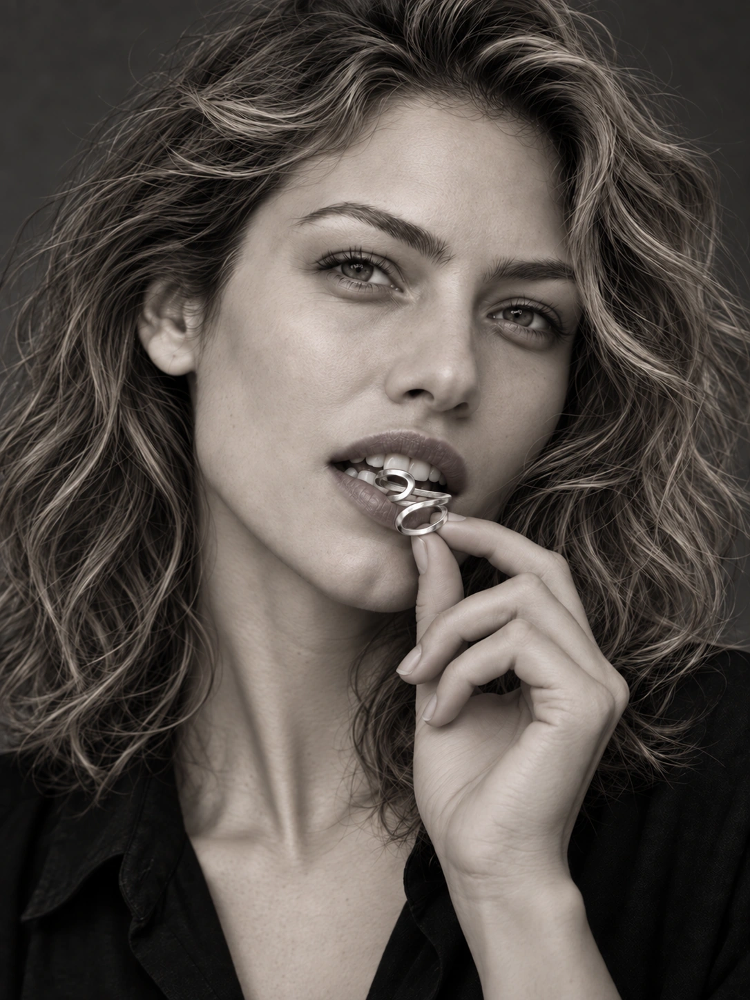
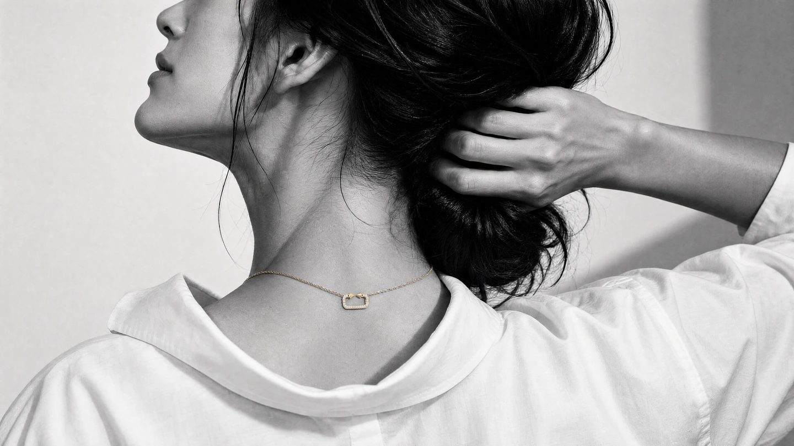
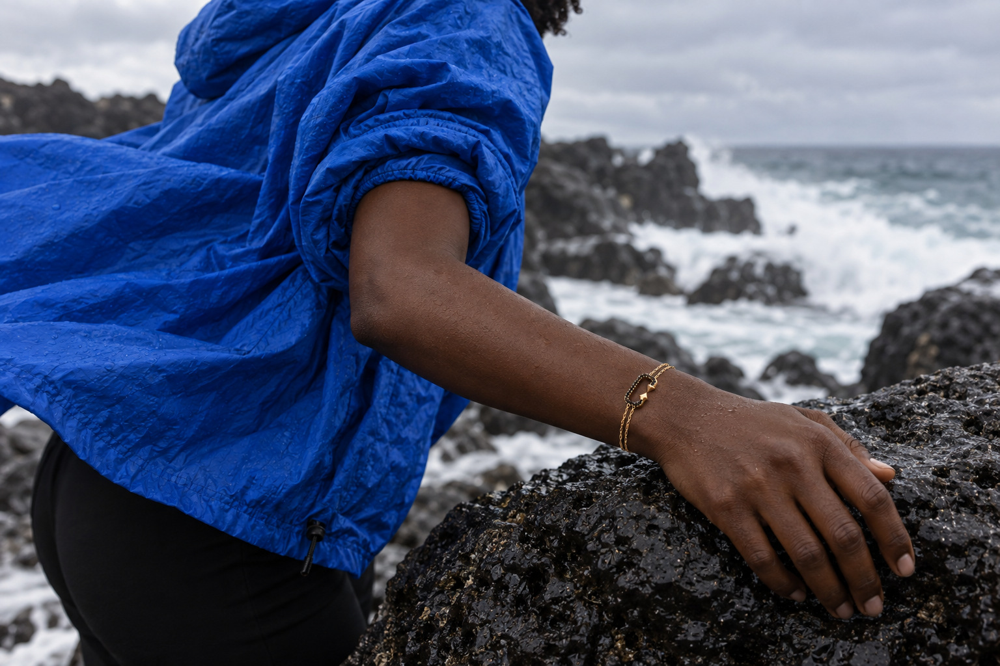
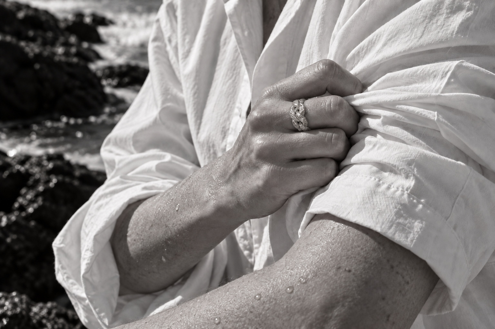

Editorial rhythm
Oversized type and generous space give portraits room to establish the mood before the visitor reaches the jewelry.
Selected work / 2026 / Velvet Army
An editorial website and a visual world for jewelry. I connected art direction, AI-assisted image production, and front-end development to carry one idea from the first image to the final screen.
Explore the project ↓
The starting point was Velvet Army’s contrast between softness and strength. I explored how that could shape the entire experience: the opening image, typography, pacing, product discovery, and the way the site moves from desktop to a phone.
The magazine became the lead direction. A red masthead, monochrome portraits, and selective gold accents establish the tone; editorial sections lead into the collection and individual pieces.
Oversized type and generous space give portraits room to establish the mood before the visitor reaches the jewelry.
Image crops and section layouts adapt to narrow viewports. Mobile is composed deliberately, with the jewelry and the subject kept in view.
The builds include collection navigation and product discovery. The alternate concepts add filters, product dialogs, and locally saved pieces, with keyboard and reduced-motion support.
Alongside the magazine, I built two independent website concepts to explore a different emotional register. Terra uses warm clay and sculptural still life. The coastal direction brings cream, olive, water, and quieter compositions. Both are working design previews.
I developed the visual direction and used AI-assisted production to explore portraits, product still lifes, natural settings, and movement. The brand’s existing jewelry photographs anchored the work; lighting, gesture, fabric, and scale shaped each scene.
Selection and revision were central to the process. I reviewed pendant proportions, chain connections, ring silhouettes, and poses against the references, then carried selected images into the websites and the short brand film.





The result is a connected body of work: an editorial website, two alternate design concepts, selected campaign imagery, and a short film. It shows how I work across design and implementation, with the visual decisions carried through to functioning interfaces.
Project scope: website design, implementation, and creative production. The linked concepts are design previews with no live checkout. Jewelry designs, logos, and original product references belong to Velvet Army. Campaign images and film use generative imagery; depicted models are fictional and fine product details may vary. My contribution is the digital experience and creative direction.
Project notes on GitHub ↗Have something in mind?